Web oficial · Libro I · Experiencia cinematográfica
PRIMERO LOVE YOUEl hijo del mañana

Sobre el autor
Christian C. D'Rosoy
Una voz narrativa con identidad propia, sensibilidad contemporánea y una forma de contar que mezcla emoción, tensión, misterio y mirada cinematográfica.
Romance emocional
Historias que conectan desde la herida.
Mirada cinematográfica
Ritmo visual y escenas potentes.
Málaga como latido
La ciudad es parte del alma del relato.
Proyecto en expansión
Web preparada para libro, vídeo, redes y nuevos lanzamientos.
Sinopsis
La historia comienza con una frase imposible
Christian Herrmann vive una vida aparentemente normal hasta que un niño se presenta en su mundo llamándole papá y pronunciando una frase que lo cambia todo: «Todavía no ha pasado».


¿Qué harías si un niño desconocido te abrazara llorando... y te llamara papá?
¿Y si supiera cosas sobre tu vida que todavía no han ocurrido?
¿Y si el amor de tu vida ya hubiera vivido esta historia antes que tú?
Mapa interactivo
Málaga, escenario vivo de la novela
He ampliado el mapa con los lugares que sí aparecen en la novela: Tanos, Indiana, Le Grand Café, Desde Anea con Amor y muchos más.
Lugares clave de la novela
Calle La Unión
Punto de partida del Christian de 2026. Su apartamento, su rutina y el lugar donde el tiempo se quiebra.
CEIP García Lorca
El colegio donde aparece CC2 y donde Silvia entra por primera vez en la historia.
Calle Peregrino
La casa familiar, el despacho del padre y el corazón de las líneas temporales.
Huelin / Playa de Huelin
Escenario de paseo, contemplación y puntos de giro emocional.
Ikigaink Experience
El estudio de Annette, donde el tatuaje despierta y el pasado comienza a hablar.
Le Grand Café
Lugar de encuentro de la Guardia y uno de los espacios sociales más importantes del libro.
Desde Anea con Amor
Club clave en la trama de 2010; escenario de cumpleaños, revelaciones y movimientos de Paco.
Tanos
Bar de Ciudad Jardín donde la Guardia se reúne, bebe y comparte el pulso del verano.
Bar Indiana
Bar del centro donde Silvia y Christian coinciden y el universo de 2010 se alinea.
El Lemmy
Local de Calle Beatas donde la final del Mundial se vive con toda la Guardia.
Castillo de Sohail
Concierto de Paco de Lucía, momento emocional y casi litúrgico de la novela.
Carretera de Cártama
El punto decisivo del 8 de julio donde el futuro se juega a doscientos metros.
La novela
Libro I — El hijo del mañana
¿Qué harías si un niño apareciera en tu vida asegurando ser tu hijo… y lo más aterrador fuera descubrir que dice la verdad? PRIMERO LOVE YOU abre una historia donde el amor, el tiempo y lo imposible se miran de frente.
Amor
El centro emocional de una historia intensa.
Tiempo
Pasado, presente y futuro empujando en la misma dirección.
Misterio
Nada es exactamente lo que parece.
Málaga
Una atmósfera real y evocadora.
Leer gratis
Prólogo + capítulos 1 al 4 para enganchar desde el inicio
He ampliado la lectura de apertura con más texto del arranque de la novela para que la entrada sea mucho más contundente.
Dedicatoria
A la memoria de mi padre
que me enseñó el valor del tiempo
antes de que yo entendiera que podía perderlo.
Prólogo
«Echar de menos a alguien que no conoces es una forma de locura que no tiene diagnóstico». —CC
Hay ausencias que no dejan fotografías. No tienen fecha ni entierro. Y, sin embargo, pesan más que los muertos con nombre.
Durante años pensé que lo que me dolía era el pasado. Me equivoqué. Lo que me dolía era algo que aún no había ocurrido.
El tiempo no es una línea recta. Eso lo dicen los físicos cuando quieren parecer valientes. El tiempo es un animal herido que siempre vuelve al lugar donde sangró.
Hay nombres que uno aprende a callar antes de que existan. Hay promesas que se rompen antes de ser dichas. Hay personas que reconoces la primera vez que las ves, no porque las hayas visto antes, sino porque las has estado esperando sin saberlo.
A veces despierto con la sensación de haber perdido algo que nunca sostuve entre las manos. Un latido que no escuché. Una despedida que nadie pronunció.
Si pudiera volver atrás, diría que todo empezó con un abrazo.
Pero la verdad es que empezó mucho antes. Empezó el día que comprendí que el tiempo no siempre se pierde hacia adelante.
A veces se pierde hacia alguien.
Empezó un lunes de febrero, con el café todavía humeando en la taza y un niño de ocho años mirándome desde una silla diminuta con los ojos que eran los míos.
Capítulo 1 · Todavía no ha pasado
Hay exactamente dos momentos en la vida de todo hombre en los que el tiempo se detiene de verdad: cuando alguien te dice que vas a ser padre y cuando te lo reclama un niño al que nunca has visto. A mí me tocaron los dos el mismo día. Y ninguno era posible.
Lunes · 08:15 h · Calle La Unión · Málaga · 2026
El silencio en mi apartamento de la calle La Unión no era simple vacío. Era una entidad viva, pesada como el plomo fundido, instalada en cada rincón con la persistencia de un invitado no deseado. Se acurrucaba junto a mí en el sofá de cuero desgastado por el tiempo y las ausencias. Reclamaba el lado izquierdo de la cama, el lugar abandonado por mi ex hacía ocho meses tras dieciséis años de vida compartida.
Nuestra historia empezó en aquella primavera de 2010. Entonces creíamos tenerlo todo por delante; no imaginábamos que lo mejor de nosotros se quedaría tirado en la cuneta. Ahora, ese mutismo se adhería a las paredes blancas del salón como una niebla espesa, impregnada del humo fantasma de cigarrillos ya apagados.
Eran las ocho y cuarto de un lunes gris de febrero. Al otro lado de la cristalera, Málaga se desperezaba bajo una luz pálida y cortante: un sol incapaz de calentar los huesos, pero clavado en la piel como la hoja de un cuchillo afilado. La cafetera italiana, reliquia de mis días más optimistas, emitió su gorgoteo final. El café brotó negro como la brea. Espeso. Amargo. Sin azúcar. El combustible necesario.
A mis pies, Noa —mi pequeña Pomerania negra de ojos brillantes— soltó un bufido impaciente. Su urgencia canina me recordaba que aún había vida en este lugar. Ella también añoraba los desayunos de domingo: el aroma del pan tostado con tomate y aceite de oliva, el zumo de naranja recién exprimido inundando el aire de cítricos y las risas mudadas sin aviso, dejando ecos huecos. Le rasqué detrás de las orejas con dedos distraídos; me miró con esa paciencia infinita propia de los perros y los ancianos sabios. Entendía mi tormenta interna mejor que yo mismo.
Me serví el café en la taza desconchada, la última superviviente de aquel juego barato comprado en IKEA en una tarde de ilusiones, cuando el amor parecía eterno. Me quedé mirando a través del muro de vidrio, observando el mundo como un espectador distante. Abajo, la calle iniciaba su ritual diario: persianas metálicas ascendiendo con estrépito oxidado, peatones apresurados hacia Juan XXIII con maletines y mochilas al hombro, y algún repartidor en patinete eléctrico zigzagueando entre ellos. Yo, con treinta y siete años a mis espaldas, me sentía un actor secundario relegado a la última fila de su propia existencia.
El equipo de música, un Marantz de los setenta heredado de mi padre, custodiado como un relicario de polvo y memoria, bañaba el rincón con un resplandor ámbar. La aguja vibró en el surco final del vinilo y, de pronto, la guitarra de Triana rasgó la quietud del salón. Era Un nido en mi ventana. La voz de Jesús de la Rosa empezó a elevarse, ese ruego hipnótico suplicando a una blanca paloma su vuelo, que no se perdiera en el vacío para no sucumbir al frío. Me quedé quieto mientras el café seguía sin tocar. Noa me observaba desde el suelo, inmóvil. La canción no tenía prisa por terminar y, por un momento, yo tampoco.
Mi ex siempre tachaba esta canción de ingenua. Nunca entendí su fascinación. Lo entiendo ahora.
Herrmann Sole, mi tienda online de sneakers de edición limitada, funcionaba con precisión quirúrgica. Algoritmos, drops exclusivos, envíos internacionales sin retrasos. El dinero entraba sin esfuerzo. Podía permitirme el apartamento, las cervezas con la Guardia Pretoriana, los caprichos innecesarios vendidos por la sociedad como éxito. Por fuera, todo era impecable. Por dentro, el vacío absoluto.
El iPhone vibró sobre la encimera de granito, rompiendo el hechizo. El nombre en pantalla me sacó la primera sonrisa genuina en días: Toni. Contesté; mi voz sonó áspera, oxidada por horas de quietud.
—¿Dime, piloto? —dije, intentando sonar casual.
—¡Christian! ¿Qué pasa, fiera?
Su voz llegó cristalina; los seis mil kilómetros entre Málaga y Dubái fueron apenas un susurro. Toni, con su metro noventa y siete de estatura, piel morena y ojos verdes penetrantes, era mi hermano del alma desde los cuatro años. Ahora, piloto comercial, trotamundos profesional capaz de desayunar cruasanes en Londres, almorzar kebabs en Doha y cenar dim sum en Singapur.
—Acabo de salir del Dubái Mall y, tío, he visto algo capaz de hacer explotar tu stock.
—¿Más Yeezys? El mercado está saturado. La gente ya no pica con cada drop.
—No, cansino. Escucha: tres pares de Jordan 1 Retro High «Dior». Las de verdad, liberadas aquí en exclusiva para los VIP de los Emiratos. Las tengo en la mano ahora mismo. Huelen a cuero premium. Si las subes este viernes, pagamos las rondas de la Guardia Pretoriana por un año entero.
Mi amigo tenía ese don innato: donde otros veían simples zapatillas, él olfateaba oportunidades de oro. Su instinto para los negocios era legendario, afilado por años de vuelos intercontinentales y tratos en aeropuertos remotos.
—Si son auténticas y traes el certificado, envíame fotos ya. Las marco como «Próximamente» en la web. ¿Cuánto has soltado por ellas?
—Demasiado, pero recuperamos el triple, fácil —rió, y su carcajada resonó con el bullicio de fondo: idiomas entremezclados, ruedas de maletas y anuncios en árabe—. Mañana hago escala en Madrid y el jueves bajo a Málaga unos días. Quiero a toda la Guardia en Le Grand Café. No acepto excusas.
—Cuenta con eso. Trae esas joyas y lo celebramos como se merece.
—Oye, espera —frenó antes de colgar. Su voz bajó un tono, volvió a ser la del crío del Perchel—. ¿Y la rubia? ¿Habéis hablado?
Hice una pausa demasiado larga, la que dice todo sin abrir la boca.
—Ocho meses sin hablar, tío.
Al otro lado no hubo respuesta inmediata. Esa pausa suya, de las que pesan más que cualquier palabra.
—Joder, macho.
—Buen vuelo, cabrón.
Colgué a Toni y el apartamento volvió a quedarse quieto. Me bebí el café de un trago, ignorando que ya estaba frío. El negocio marchaba sobre ruedas… pero el lugar seguía siendo un mausoleo demasiado vasto para mí y un puñado de recuerdos que se negaban a desvanecerse.
Me detuve frente al espejo del pasillo. Chupa de cuero negra, camiseta blanca de algodón grueso y unas sneakers de mi colección con un valor superior al salario mensual de medio país. Rubio, un metro ochenta y dos, ojos verdes heredados de mi madre. Christian Herrmann: éxito rotundo por fuera, rompecabezas con piezas perdidas por dentro. ¿Cuánto tiempo más podía fingir que esta era la vida que quería?
Iba a colocarle el arnés a Noa cuando el teléfono volvió a vibrar. Número fijo, prefijo de Málaga. Contesté con un nudo en el estómago.
—Buenos días, dígame.
—Buenos días. ¿Es el señor Christian Herrmann? —La voz era joven, clara, con ese acento malagueño cálido que te desarma sin que te des cuenta, como un abrazo inesperado.
—Sí, soy yo.
—Soy Silvia, la tutora de segundo de primaria en el CEIP García Lorca. Necesitamos que venga lo antes posible. Su hijo se ha alterado mucho y no pregunta más que por usted. Dice que no se calmará hasta que llegue su papá.
—¿Mi… hijo? —balbuceé, sintiendo un vértigo repentino—. Debe haber un error. No tengo hijos.
El mundo se detuvo en seco. Hubo murmullos al otro lado, un llanto amortiguado de fondo. La mujer regresó a la línea con tono suave, pero con una certeza que me inquietó.
—El teléfono registrado es este, Christian. Y el niño insiste. Se llama como usted. Dice que es su «pequeño CC2». ¿Podría venir, aunque sea para aclarar el malentendido? No deja de llorar.
El apodo que nadie más que los más íntimos usaban: CC. Sentí el corazón golpear contra las costillas como un martillo neumático. Tuve que apoyarme en la encimera para no caer. CC2; el nombre con el que bromeaban mis colegas sobre cómo llamarían a mi hijo si algún día lo tuviese.
—Mire —conseguí decir con voz extraña—. Le repito que no tengo hijos. No puedo ser el padre de nadie.
—El niño no ha parado de llorar desde que llegó —repitió la docente, sin drama, limitándose a sostener los hechos—. Dice «papá». Lo quiere a usted.
Cogí aire. Había un millar de razones para colgar: error de registro, niño con fantasías, padre con mi nombre. Eran sólidas. Y, sin embargo, esas siglas no se dejaban guardar en ninguno de esos cajones. Era demasiado específico.
—Está bien —logré decir al fin—. Iré. Pero le aseguro que esto es un error garrafal.
Colgué. Noa ladró una vez, un sonido corto y agudo.
—Tranquila, chica —murmuré mientras le ajustaba el arnés con manos temblorosas—. Vamos a dar un paseo antes de sumergirnos en este lío.
El frío de aquel mes se metía por las costuras de la chupa, pero el sol de la mañana ya empezaba a reclamar su sitio. Noa tiraba de la correa con esa urgencia mecánica que tienen los perros cuando el barrio ya está a pleno rendimiento a las nueve y media.
Salimos del recinto. Frente a mi portal, las persianas de los comercios ya habían terminado de tronar y el trasiego era constante, marcando el ritmo de una calle que no sabe lo que es la tregua. El barrio se desplegaba ante nosotros: una hilera interminable de bloques, ladrillo visto y fachadas de hormigón que conviven con los edificios nuevos que han ido cerrando el cielo. A esta hora, el sol ya pegaba con ganas, creando una claridad que rebotaba entre los edificios y el asfalto, iluminando los camiones de reparto que descargaban frente a los súper. Había olor a pan recién hecho mezclado con el ruido de los motores diésel.
Caminamos hacia el pequeño parque donde la perra marcaba su territorio. En mi mente, la conversación se repetía en bucle, como un vinilo rayado que se niega a saltar de surco: «su hijo», «muy nervioso», «CC2». ¿Cómo demonios un niño de segundo de primaria conocía mi apodo, ese mote que manejaban los más íntimos? ¿Por qué el colegio tenía mi número y mi nombre vinculados a ese crío? ¿Era una broma cruel de algún viejo conocido o algo mucho más retorcido, diseñado para sacarme de mi madriguera?
¿Qué pensaba hacer con el resto de la mañana? ¿Sentarme frente al iMac a revisar pedidos que el sistema ya gestionaba? ¿Perderme otra vez en la galería del móvil, buscando fotos antiguas de la rubia para flagelarme con lo que fuimos?
No. Esta vez el aislamiento no iba a ser mi refugio. Había un hilo invisible que tiraba de mí, un cable de alta tensión que me obligaba a moverme. Tenía que ir. Tenía que mirar a ese niño a los ojos y desentrañar aquel absurdo antes de que terminara de volverme loco.
Lunes · 10:10 h · Colegio García Lorca
El CEIP García Lorca se erguía en la calle Alemania con dignidad fatigada. Opté por caminar para ordenar el caos. Al entrar en el colegio, el vaho dulzón de la colonia infantil me asaltó como una emboscada. Era un olor a limpieza impostada, a alcohol y cítricos ácidos que intentaban enmascarar el rastro rancio del edificio. Se me pegó a la garganta como un recuerdo que no había pedido recuperar. La secretaria me recibió con una sonrisa profesional, pidió mi DNI y me indicó el camino a la primera planta. Subí las escaleras con el pulso acelerado. Era ridículo. Entraría, aclararía el error y volvería a mi rutina. Fin de la historia
Pero antes de alcanzar el pomo, mis pies se clavaron en el terrazo. Desde el interior del aula llegaba una melodía tarareada en un hilo de voz. La reconocí al primer acorde mental: Sabor de amor, de Danza Invisible. La profesora estaba allí dentro, acariciando esas notas ochenteras. La tarareaba bajito, con cadencia perezosa. El sonido era frágil, cargado de una intención que me erizó la piel. Me quedé allí, inmóvil, escuchando cómo el «sabor de amor…» moría en un suspiro justo antes de que mi mano empujara la madera.
La puerta del aula estaba entreabierta; dejaba escapar un llanto suave. Silvia me vio primero. Tendría treinta y pocos, llevados con ligereza envidiable. El pelo rubio era lo primero que veías: rizado con fuerza, denso, con vitalidad salvaje. Tenía los ojos marrones y grandes, capaces de leer el estado de una habitación antes de que nadie hablara. Su piel era clara, luminosa bajo aquella luz de invierno terminal. Vestía como quien ha tenido la mente en otra parte al despertar: blusa clara con un botón mal abrochado, vaqueros sencillos y zapatillas de deporte. Exudaba la energía precisa de quien sabe calmar el mundo sin levantar la voz.
Mi presencia borró el tarareo de golpe.
—¿Christian, verdad? —dijo con una voz que mezclaba cercanía y profesionalidad—. Gracias por venir tan rápido. Pasa, por favor.
Ahí estaba él. Un crío de unos ocho años, sentado en una sillita de madera junto a la puerta. El sol se colaba por las persianas en rayas de luz polvorienta, iluminando motas flotantes como galaxias en miniatura alrededor de su cabeza. Llevaba la camiseta de la selección, la del Mundial 2010, un par de tallas mayor, y pantalones cortos que dejaban ver sus rodillas curtidas en mil batallas de patio. Su pelo rubio, lacio… y cuando levantó la vista, el suelo bajo mis zapatillas de edición limitada pareció desvanecerse. Sus ojos eran como los míos: profundos, enmarcados por pestañas largas que yo conocía bien. Era un espejo desfasado, una fotografía de mi propia infancia cobrando vida para señalarme mis deudas pendientes. Me dejó sin aire.
Al verme, el chavea se levantó de un salto. Corrió hacia mí y se estrelló contra mis piernas, abrazándolas con una fuerza desesperada.
—Sabía que vendrías, papá —susurró contra mi rodilla.
Me quedé petrificado. Mis manos quedaron suspendidas en el aire, inertes, atrapadas en un limbo imposible entre el impulso de abrazarlo para detener su temblor y el de huir hasta que el barrio del Perchel quedara reducido a un punto borroso en el retrovisor. Silvia se acercó con pasos suaves, rompiendo el vacío. Sus ojos brillaban con una ternura casi insultante por su realismo.
—Es la primera vez que menciona su nombre —susurró la profesora—. Hasta hoy, se limitaba a dibujar. Mire.
Me tendió un folio arrugado, marcado por el rastro de ceras de colores. Era un dibujo infantil, pero con un detalle que me heló la sangre: un hombre alto con chupa de cuero y el cuello subido, de la mano de un niño pequeño. Ambos llevaban la camiseta de la selección. Debajo, en letras grandes, torpes y decididas, una palabra que parecía gritar: PAPÁ.
Un zumbido sordo empezó a pitar en mis oídos, ese tono de frecuencia que precede a un desmayo. Di la vuelta al papel con los dedos entumecidos y sentí que el corazón se me detenía. En el reverso, con una caligrafía infantil temblorosa pero clara, había una dirección escrita: Calle Peregrino, 28.
La casa de mi infancia. Aquel lugar que había quedado atrás como un capítulo que nunca supe cerrar del todo. Ver esa dirección escrita por la mano de un niño me provocó un vértigo ajeno a la altura; era el pasado reclamando su sitio en un presente que ya no lo esperaba.
Sus ojos se clavaron en los míos buscando una respuesta inexistente. Inclinó un poco la barbilla, evaluándome, imitándome sin saberlo. No era la mirada de un niño asustado; había en ella una profundidad desconcertante, una sabiduría antigua incapaz de caber en un cuerpo tan frágil.
—No te preocupes, papá —susurró tan bajo que apenas logré captarlo—. Todavía no ha pasado.
Sonrió. Una sonrisa que no era del todo de niño, sino de alguien que vislumbra el final de un cuento y decide creer en él.
Silvia alzó una ceja, intrigada por nuestro silencio prolongado, ese duelo de miradas entre dos versiones de un mismo hombre.
—¿Te sientes bien, Christian? Te has quedado pálido.
Su mano rozó mi brazo con gesto ligero, casi casual, pero el calor del contacto atravesó la manga de la chupa hasta anclarse en mi piel. Allí, frente a aquella docente capaz de ver a través de mis corazas y un niño desafiante ante toda lógica, entendí que mi vida de facturas automáticas y ausencias programadas acababa de estallar. El futuro irrumpía en el aula. Yo no tenía dónde esconderme.
—Disculpa —conseguí articular, tratando de que la lógica de empresario ganara la partida al pánico por un segundo—. Esto no tiene sentido. Si el pequeño está escolarizado aquí, alguien ha tenido que traerlo esta mañana. Alguien ha tenido que firmar la matrícula, pagar el seguro escolar, dar una cuenta bancaria… ¿Quién figura como madre? ¿Quién lo recoge cada tarde?
Me miró con una mezcla de lástima y desconcierto. Se soltó del niño con suavidad y nos apartamos hacia su mesa, donde una carpeta azul descansaba sobre una pila de libros.
—Entiendo que estés en shock —dijo con voz baja—, pero yo soy su tutora nada más desde hace tres meses. El pequeño entró a mitad de curso; la matrícula vino directamente de Delegación y los papeles llegaron así, con tachones, alegando «protección de datos del menor». A mí me dijeron: «Si pasa algo, llama a este número».
—No hay madre en el registro —murmuró ella—. Lo trae cada día una cuidadora social, pero con el jaleo de la puerta apenas cruzamos palabra. Los pagos del comedor y las cuotas los paga alguien que permanece anónimo a través de una cuenta de servicios externos. Christian, para nosotros, eres su única realidad.
El aula se hizo más pequeña de golpe. El olor a bocadillos de Nocilla se mezcló con el perfume suave de Silvia y con el latido desbocado de mi propio corazón. Miré de nuevo al niño, que ahora coloreaba tranquilamente.
Salí del aula. Al andar sentí un latido raro en el antebrazo, un cosquilleo eléctrico que me recorría la piel. Pensé que sería el estrés o el solazo de Málaga, que ya estaba pegando de lo lindo a través de los cristales del pasillo. Pero el peso seguía ahí.
Antes de llegar al final del pasillo, unos pasos rápidos resonaron a mi espalda. El peque seguía aferrado a mis piernas, caminando a mi paso con una determinación impropia de su edad. Me detuve en mitad del corredor y él también lo hizo. Alzó los ojos despacio; eran mis propias esmeraldas, pero cargadas de una sabiduría ajena, de algo que no pertenecía a un patio de colegio. Sonrió por segunda vez. No era el gesto de un niño. Era la sonrisa de alguien que ya sabía cómo terminaba esta historia.
Y yo, por primera vez en ocho meses, sentí que algo —alguien— me estaba llamando desde un lugar que aún no existía.
Capítulo 2 · La Grieta
Lunes · 10:55 h · Colegio García Lorca
Bajé las escaleras con el dibujo doblado en el bolsillo interior de la chaqueta de piel: una granada a punto de detonar. Cada crujido del papel contra el cuero era un recordatorio punzante: aquello no había salido de mi cabeza. Era real.
El niño —ese supuesto hijo mío, con mis ojos y mi remolino en el pelo— se había quedado dentro con la profesora. Su voz suave se filtraba a través de la puerta entreabierta mientras le hablaba bajito, calmándolo con la delicadeza de una madre. Me invadió una envidia sorda, un pinchazo en el pecho que me transportó a mis propios días de infancia: nadie me había secado las lágrimas con tanta ternura. Aprendí a tragármelas a solas, en el baño del instituto, mirando mi reflejo en el espejo empañado con la rabia suficiente para estallarlo.
El pasillo del García Lorca se abría ante mí como un túnel de hormigón. Fuera, en el patio, el griterío de los niños era un ruido lejano, un eco de juegos que yo ya no sabía descifrar. Mis zapas golpeaban las baldosas desgastadas con un ritmo seco, rompiendo el silencio. Arriba, un fluorescente agonizante parpadeaba con un zumbido eléctrico, rindiéndose poco a poco. Estaba fuera de lugar. Todo me parecía irreal, como si hubiera irrumpido en una película independiente donde me habían asignado el papel principal sin guion, sin ensayos, sin advertencia alguna. ¿Quién era el director de esta farsa? ¿El destino, con su sentido del humor retorcido? ¿O mi propia mente, fracturándose bajo el peso de la soledad acumulada?
Necesitaba aire fresco para disipar la opresión en mi pecho, una presión que no sabía si atribuir al pánico puro, a la incredulidad absoluta o a algo peor, como el comienzo de una grieta en mi realidad cuidadosamente construida.
La docente me acompañó hasta la salida principal. Sus pasos se sincronizaban con los míos en un ritmo involuntario; el pasillo parecía más corto, más íntimo. Fuera, el sol pegaba con suavidad engañosa. El invierno malagueño coqueteaba con la primavera: aire limpio impregnado de salitre y aroma a naranjos. Un murmullo urbano constante rodeaba la escena mientras algún niño salía corriendo del colegio con la mochila a medio cerrar, recordándome una inocencia perdida hace décadas.
—Christian… —me llamó antes de que pusiera un pie fuera. Su voz me clavó en el sitio—. ¿De verdad no tienes idea de quién es?
Me giré y la miré; realmente la miré por primera vez. Bajo la luz tenue del vestíbulo, sus ojos marrones brillaban con una chispa de curiosidad que trascendía el mero deber profesional. No era solo la tutora preocupada por un alumno alterado; había algo eléctrico en el aire entre nosotros, un reconocimiento silencioso y profundo, como si el universo —ese gran titiritero caprichoso— hubiera decidido cruzarnos en este preciso momento para que algo se removiera en lo más hondo de mí. Su coleta rubia se deshacía en un mechón rebelde que le rozaba la mejilla. Quise extender la mano y apartarlo. Evité hacerlo.
—No tengo hijos. Te lo juro por lo que más quieras —respondí, aunque mi voz había perdido contundencia, teñida por una vulnerabilidad difícil de admitir—. Mi vida, hasta hace una hora, consistía en gestionar zapatillas exclusivas, pasear a mi perra y evitar el vacío. Mi última relación terminó hace ocho meses con una discusión grabada a fuego. Lo último que esperaba hoy era un «mini yo» que me llamara papá. ¿Lo entiendes? Esto no encaja en mi mundo.
Ella encajó las palabras sin retroceder. Al contrario, se acercó lo suficiente para que su perfume me envolviera: frescor terroso, como lluvia sobre tierra seca, mezclado con un toque delicado de vainilla. Me recordó, por un segundo traicionero, los domingos perezosos con mi ex. Pero esto era nuevo, vibrante; la mujer portaba una corriente capaz de reavivar circuitos dormidos.
—A veces los niños son canales para cosas ajenas a la comprensión adulta —dijo con esa sonrisa ladeada, llena de calidez malagueña—. No ha parado de repetir que «papá siempre viene cuando lo necesito». Y ese dibujo… Christian, captura hasta el detalle del cuello subido. Te ha dibujado por dentro antes de que tú mismo te miraras.
Sacó un post-it del bolsillo de sus jeans y buscó el bolígrafo que usaba para sujetarse la coleta, desenredándolo con un gesto experto antes de empezar a escribir. Se acercó para entregármelo, y el roce de sus dedos contra los míos fue deliberado, cálido, prolongado solo un instante, pero lo suficiente para que un pulso acelerado reverberara entre nosotros.
—Toma mi número personal. Por si el niño dice algo más… o por si necesitas hablar con alguien que no te tome por loco. —Hubo una pausa mínima—. O hablar, sin más —añadió antes de girarse.
Ese «sin más» resonó como una promesa velada, algo que encendía una parte de mí dormida desde la partida de mi ex. Hacía años que no sentía esta urgencia visceral: el deseo de inclinarme, cerrar la distancia y ver qué chispa saltaba. Pero no era el momento. No allí, con el dibujo ardiéndome en el bolsillo y el niño esperando en el aula.
—Gracias —articulé con voz ronca—. Te avisaré si descifro esta broma cósmica.
Ella sonrió de nuevo, más lenta, más íntima. Retiró los dedos despacio, dejando un rastro de calor que subió por mi brazo hasta el pecho.
—Hazlo. Y cuídate, Christian. Pareces… perdido. Alguien que ha olvidado el camino de vuelta a sí mismo.
Salí a la calle. El sol calentaba mi piel, pero no lograba disipar el calor diferente que subía desde el estómago. Caminé de vuelta cruzando el puente de hierro hacia el Perchel. Dejé atrás el centro de salud. El tráfico de Salitre era un fondo sonoro incapaz de ahogar el torbellino mental: mitad obsesionado con el abrazo del niño, mitad atrapado en la forma en que ella pronunció mi nombre.
Lunes · 11:30 h · Calle La Unión
Llegué al piso. Noa me recibió con ladridos y saltos, intuyendo mi necesidad de afecto incondicional. La abracé fuerte, inhalando su aroma a hogar.
—¿Tú sí que me conoces, eh, chica? —murmuré. Su presencia era lo único que me mantenía a flote.
Decidí sacarla para aclarar la cabeza. Necesitaba que el viento y el salitre me barrieran las ideas.
Lunes · 12:00 h · Playa de Huelin
Enfilé hacia Huelin. La playa estaba casi vacía. Noa corría libre por la arena y yo la seguía con los ojos mientras el mar hacía su trabajo eterno. Observé a un hombre con su hijo cerca del paseo. El pequeño tendría seis años; se detuvo porque tenía el cordón desatado. El padre se agachó con gesto automático, y el niño esperó con paciencia absoluta, con la confianza de quien sabe que hay una mano que siempre llega. Al terminar, el crío siguió andando sin mirarlo. Esa certeza no necesitaba confirmación.
Me paré. Esa mañana, un niño al que nunca había visto me había abrazado las piernas con esa misma confianza. Noa volvió a mi lado. La cogí en brazos y la achuché con ganas, sin apartar la vista de los dos que se alejaban por el paseo.
—Vamos —le dije—. A casa.
Al llegar, me dejé caer en el sofá. Saqué el dibujo y lo desplegué bajo la luz ámbar de la lámpara. El hombre era yo: cuello subido, postura encorvada para ocultar inquietud. Debajo, con letras torpes: «Papá». Detrás, esa dirección que me helaba la sangre.
La frase se quedó instalada, sin destinatario, igual que él la había dejado escrita: para que pesara antes de ser entendida.
Salí al balcón. Observé el cielo de Málaga bajo la luz plana del mediodía. Por un segundo, el tiempo pareció detenerse. La profe tampoco se iba de mi mente. No como obsesión, sino como algo más incómodo: como una canción instalada sin nombre. Había estado menos de una hora en ese colegio. Había dicho cuatro frases con peso excesivo. Su número en el bolsillo ardía de una manera ajena al niño. Eso me inquietaba. No era deseo; era algo raro. Era la sensación de que ella sabía algo de mí, y que yo tendría que estar cerca cuando eso saliera a la superficie.
Sentí el impulso de ir a esa casa, aporrear la puerta y exigir respuestas. Pero me detuvo el eco de su voz infantil. ¿Y qué encontraría allí? ¿Respuestas? ¿Mi vida? ¿Lo ya roto?
Saqué el móvil. El post-it seguía allí, con el número garabateado en azul. Mis dedos dudaron. No escribí. Aún no. Pero guardé el contacto bajo «***Silvia Tutora***», como un paso irreversible hacia lo desconocido.
Noa apoyó la cabeza en mis pies. Málaga seguía bullendo, pero yo estaba atrapado en un punto muerto: una calle Peregrino que ya no me pertenecía, un número de teléfono ardiente y el dibujo de un hijo imposible. El papel parecía pesar toneladas. Lo miré. Y por primera vez en mucho tiempo, no sentí vacío.
Sentí algo peor.
Expectativa.
Capítulo 3 · El Código
Lunes · 18:30 h · Calle La Unión
Me apoyé en la barandilla y dejé que el aire frío me golpeara la cara. El aislamiento del piso se me echaba encima como un bloque de hormigón. Tenía que hablar con alguien; no podía guardarme esto a solas. Marqué el número de mi madre. Vivía en Pedregalejo, en aquel piso con vistas al mar.
—¿Christian? ¿Todo bien, hijo?
—Hola, mamá… No, la verdad es que no. Ha pasado algo muy raro hoy. Fui al García Lorca tras un aviso del centro. Un niño de segundo de primaria… dice que soy su padre. Me abrazó, me llamó papá y conocía mi apodo, CC. Me enseñó un dibujo donde salgo yo y, en el reverso, la dirección de la calle Peregrino, 28.
Al otro lado, la línea quedó en suspenso. Mi madre soltó una risa nerviosa, apagada al instante.
—Dios mío… ¿Y qué te dijo exactamente?
—«Sabía que vendrías, papá» —susurró—. Y luego: «Todavía no ha pasado». Esa frase me ha dejado helado.
Tardó un segundo en responder. Su voz sonó más baja, como si buscara algo en la memoria.
—Tu padre siempre decía eso ante cualquier problema: «Todavía no ha pasado». —Hizo una pausa—. Decía que, mientras no hubiera ocurrido del todo, todavía podíamos cambiar el final.
Cerré los ojos con fuerza mientras el aire se me atascaba en la garganta. Nadie conocía aquello fuera de la familia.
—Dijo llamarse como yo —añadí—. Y llevaba la camiseta de la selección; la de 2010, como la que papá me regaló.
Mi madre soltó un suspiro tembloroso al otro lado de la línea.
—Esa camiseta… tu padre la guardaba como un amuleto. No fui capaz de tirarla. La metí en una de las cajas de tu piso nuevo; debería estar allí. Christian, si ese niño existe y sabe esas cosas… —Hizo una pausa larga, cargada de miedo—. Me da escalofríos pensar que tu padre esté intentando decirnos algo desde donde quiera que esté.
Colgué con las manos temblorosas. Noa me miraba desde el suelo, quieta. Tenía el dibujo del niño en el bolsillo, la voz de mi madre todavía en el oído y la certeza de que algo había arrancado esa mañana que ya no tenía marcha atrás.
Me quedé con el teléfono en la mano sin saber cuánto tiempo pasó. Mi padre no estaba desde 2010. Años en los que había aprendido a no buscarlo en los objetos, en las voces ni en los gestos propios que lo imitaban sin querer. Y ahora un crío de ocho años lo traía de vuelta con cuatro palabras. Me levanté del sofá despacio, con el peso de quien ha recibido un golpe que no duele todavía, pero que sabe que dolerá.
Fui al dormitorio y abrí el armario. Al fondo se acumulaban las cajas sin abrir. La encontré tras apartar dos cajas de zapatillas y una bolsa de ropa de invierno abandonada allí desde la mudanza. Cartón marrón con la cinta americana reseca. Mi madre había escrito encima con rotulador negro: «Cosas de papá para Christian». La letra era suya, pero la tinta tenía el color de algo que ya no volvería.
Tardé más de lo razonable en abrirla. Al hacerlo, el olor a naftalina inundó la habitación, mezclado con algo más: madera vieja, cuero y el rastro fantasma de su colonia. Dentro había una fotografía de los dos en el pabellón de Ciudad Jardín; él con la bufanda del Unicaja, yo con siete años y cara de no creerme lo que estaba pasando. Lo recuerdo con una claridad que duele: el Unicaja ganaba la serie 2-1. Si metían ese triple, eran campeones de liga por primera vez en su historia y ante su gente. Con 77-79 abajo y el tiempo muriéndose, Mike Ansley decidió jugarse aquel triple frontal en lugar de buscar la prórroga. El balón tocó el aro, pero no quiso entrar. El Barça se llevó el partido y aquella liga del 95.
Junto a la foto, encontré el mechero Zippo grabado con sus iniciales y, debajo de todo, el verdadero tesoro: la camiseta de la selección española. La saqué con cuidado; una reliquia. Estaba descolorida, pero intacta. Al desplegarla, un papel doblado y amarillento cayó al suelo. Lo recogí con los dedos temblando:
Para mi Christianito. El futuro es una posibilidad. Recuerda: todavía no ha pasado.
—Papá —susurré.
Me senté en el suelo, con la espalda apoyada en la cama y la camiseta apretada contra el pecho. El dibujo del niño en el bolsillo; la nota de mi padre en mi mano. Un puente a través del tiempo que todavía no me atrevía a cruzar.
Me quedé allí un rato. Quieto. La fotografía entre los dedos, la nota en la otra mano. Mi padre sonreía en la foto con esa anchura de quien todavía no sabe cuánto tiempo le queda. Yo recordaba ese momento: su mano en mi hombro, pesada y cálida, diciéndome algo que no llegué a escuchar por el ruido. Siempre había sido así: llegaba tarde a las cosas importantes. A las palabras de mi padre. A los últimos meses con mi ex. Y quizás, me dije, a algo que llevaba años esperando a que le prestara atención.
El móvil vibró sobre la moqueta.
Silvia Tutora · En línea
20:14
Hola, Christian. El niño se ha quedado mucho más tranquilo después de verte. Me ha preguntado si vas a venir mañana. Dice que «papá tiene que terminar de leer la nota». No sé a qué se refiere.
20:15
Si necesitas hablar o desahogarte, sigo disponible. Me he quedado pensando mucho en vosotros.
Miré la nota de mi padre otra vez. «Terminar de leer la nota». Le di la vuelta al papel. El reverso parecía estar en blanco. Guardé el móvil sin contestar. Todavía no. La frase del niño resonaba con un peso diferente, más grave.
Doblé la nota con cuidado y la metí junto al dibujo del niño en el bolsillo interior de la Biker. Apoyé la fotografía en la mesilla, mirando hacia arriba. No era capaz de meterla de vuelta en la caja. Nada era casualidad. Nada tenía explicación. Y, sin embargo, ahí estaba: la camiseta sobre mis rodillas, la letra enérgica en el papel y el nombre de un hijo imposible parpadeando en los mensajes de la tutora.
Cogí a Noa y la subí conmigo al sofá. Sus ojos negros me devolvían una comprensión muda. Mañana volvería al colegio. No por curiosidad, sino por la certeza de que ese niño conocía secretos imposibles. Y yo no podía mirar hacia otro lado.
Me quedé mirando el reverso en blanco durante un tiempo que no supe medir. A la luz ámbar de la lámpara, la piel de mi antebrazo brillaba con un tono azulado tenue, casi imperceptible, como tinta bajo la superficie. No era una quemadura. No era un sarpullido. Era el tatuaje que me había hecho años atrás —un trazo abstracto que siempre me había parecido solo eso, un trazo— latiendo vivo. Vivo. Recordando algo que yo había olvidado.
El tiempo dejaba de ser una línea recta.
Seguir leyendo
Capítulos 3 y 4
Para mantener la web más ligera, dejamos visibles solo el prólogo, el capítulo 1 y el capítulo 2 completos. Los capítulos 3 y 4 quedan reservados para la versión ampliada o una segunda sección.
Continuación
Capítulos 3 y 4 reservados para la versión ampliada
Así la página de inicio queda más ágil, con la mejor parte del arranque bien visible y la opción de expandir la lectura cuando quieras.
Galería
Presentación del libro
Fotos reales del evento de presentación.
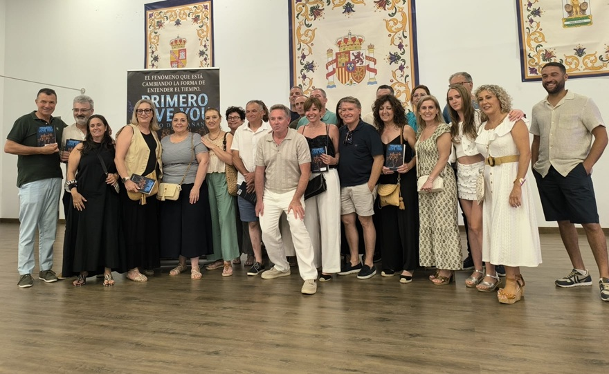
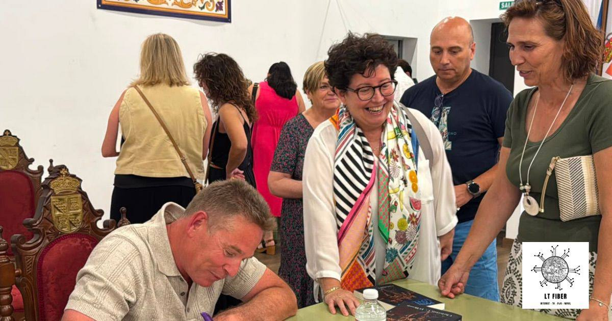
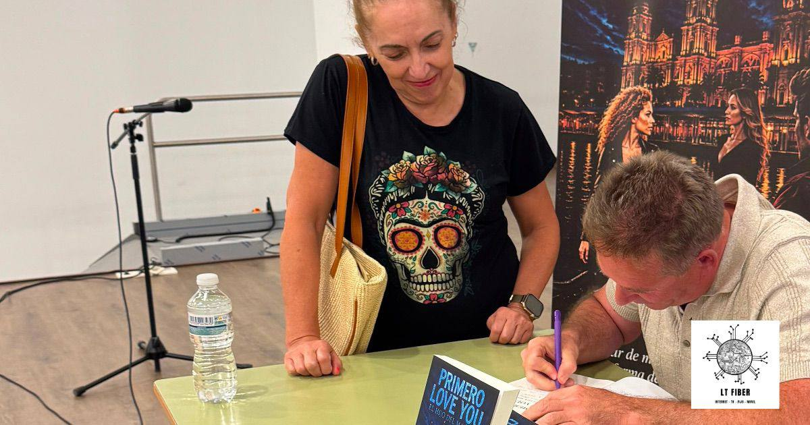

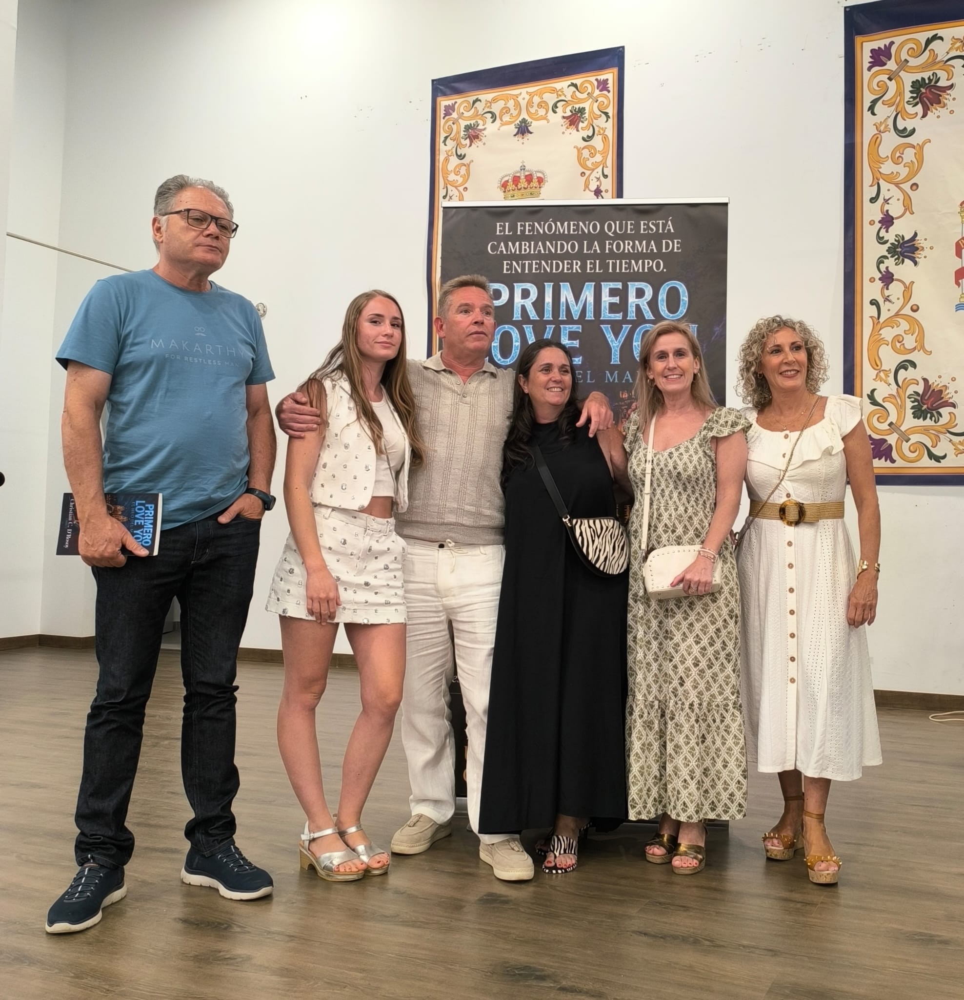
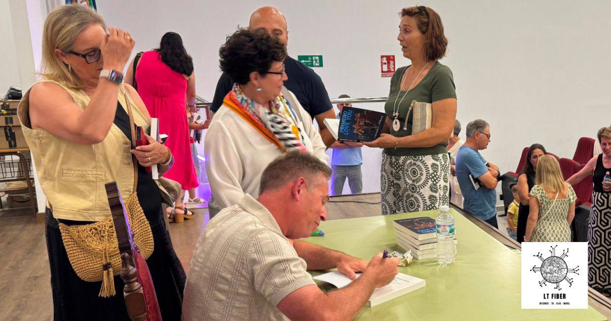
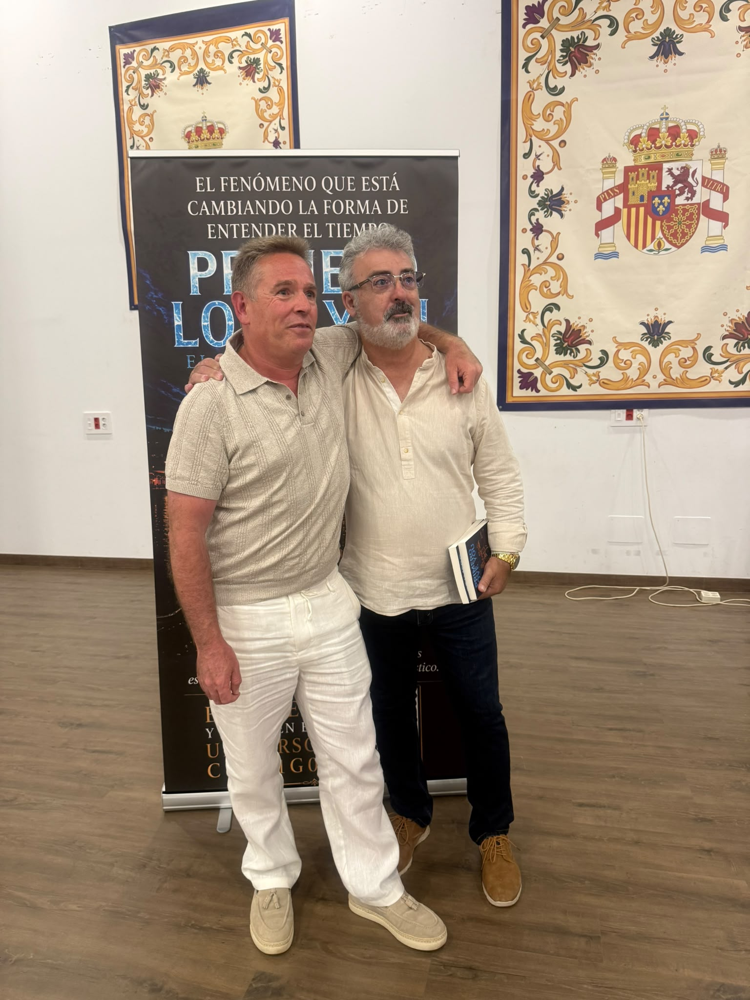
Personajes imaginados
Así podría verse el universo humano de la novela
Una galería visual inspirada en los personajes de PRIMERO LOVE YOU.
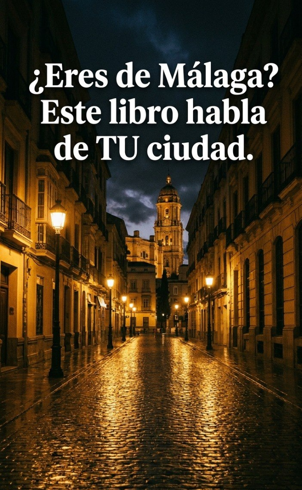
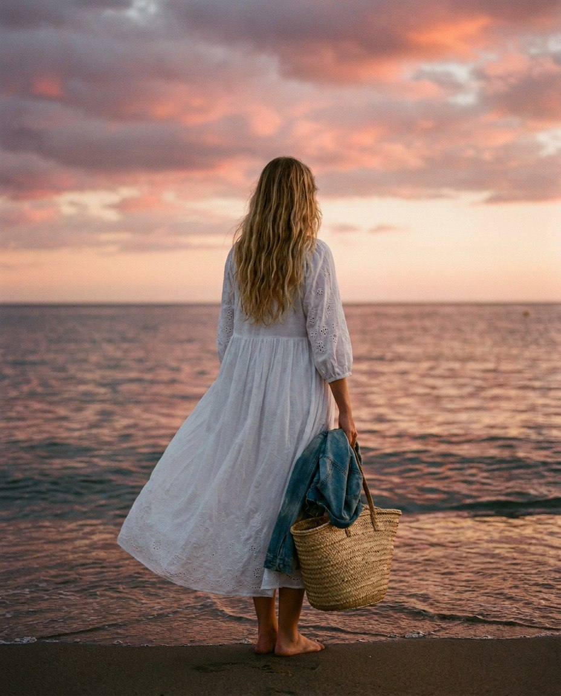
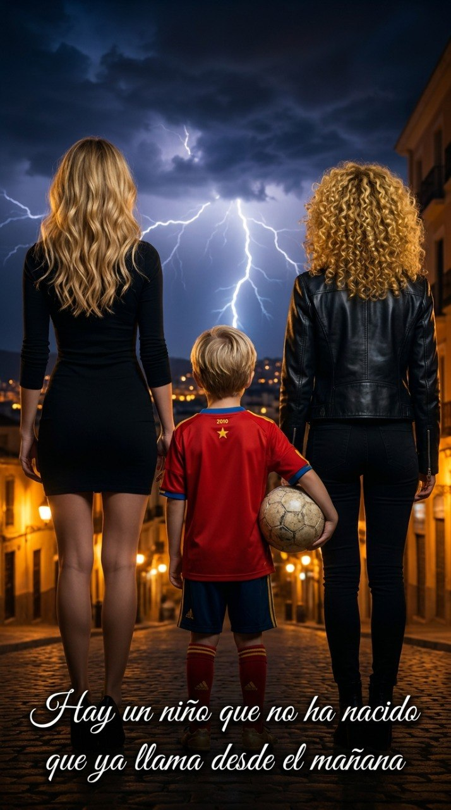
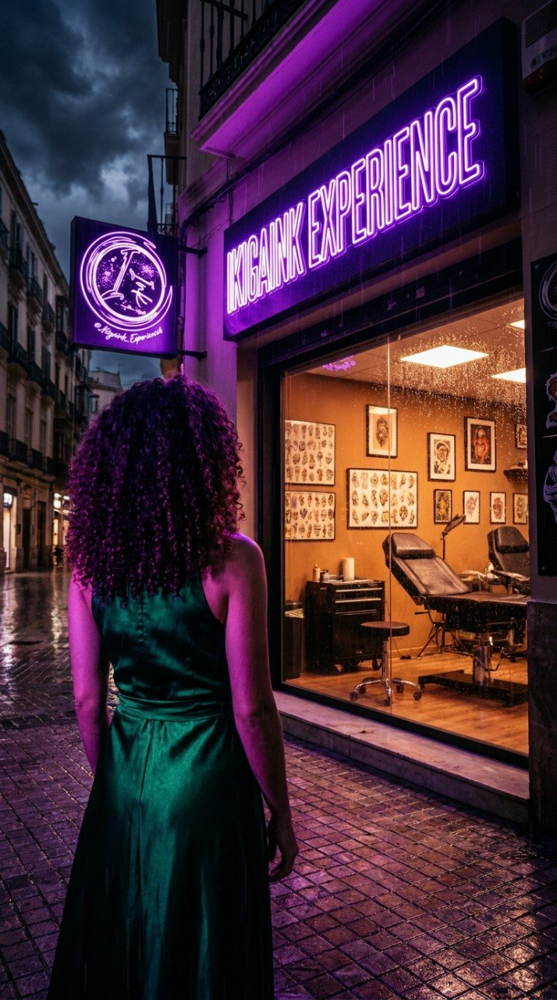
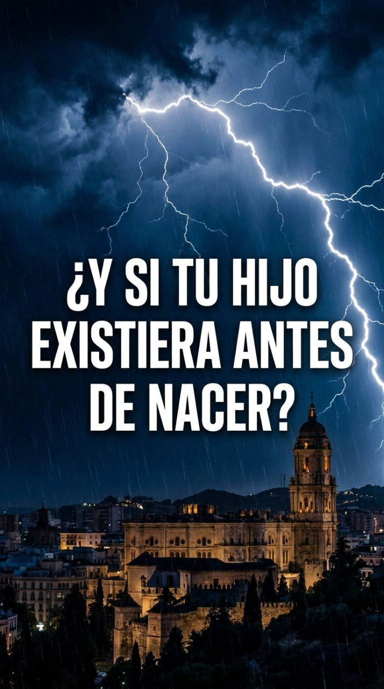
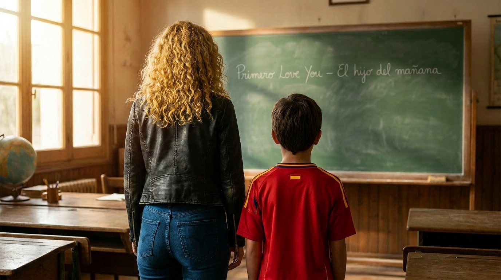
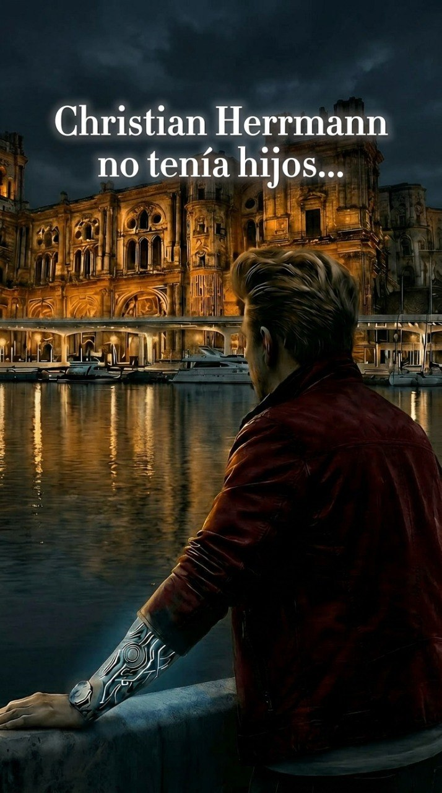
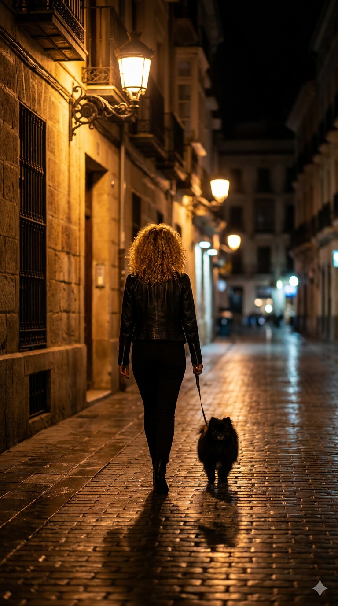
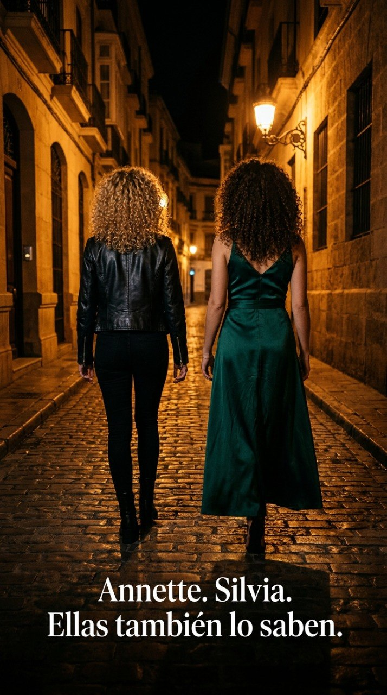
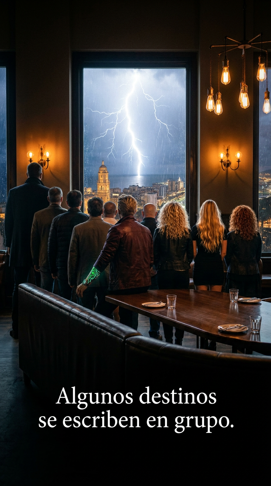
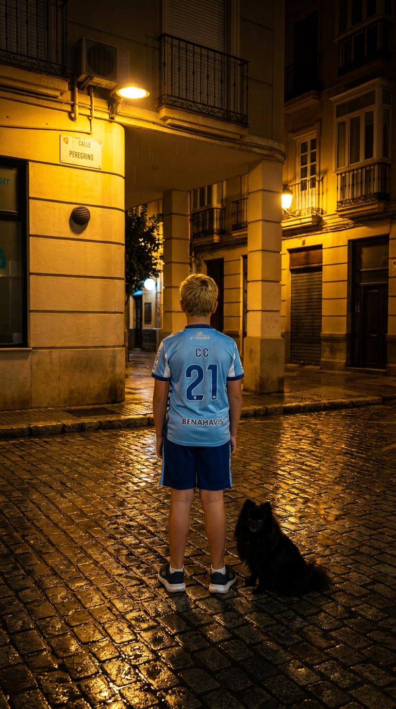
Vídeo
Booktrailer / presentación
Descubre el universo visual de PRIMERO LOVE YOU.
Opiniones de lectores
Lo que dicen quienes lo han leído
Reseñas verificadas de Amazon.
Jose Maria
4 jul 2026
¡Una joya de suspense y magnetismo! Adictivo de principio a fin.
Alex
22 may 2026
La historia tiene misterio, drama y momentos que te dejan con ganas de seguir leyendo.
Lola Perez Chia
10 jun 2026
Me ha sorprendido gratamente la narrativa tan peculiar de este nuevo escritor.
Noe
30 may 2026
La historia comienza con fuerza, presentando personajes interesantes y una trama curiosa.
Contacto y redes
Christian C. D'Rosoy
Correo y redes sociales oficiales del proyecto.
© 2026 Christian C. D'Rosoy · PRIMERO LOVE YOU · Libro I · Trilogía oficial · Ediciones 52.1 · Málaga, España
Compra física recomendada: Librerías Proteo Prometeo · C. Prta Buenaventura, 3 · Distrito Centro, 29008 Málaga
Compra
Disponible también en Amazon
Si te ha gustado la muestra, lleva el libro completo contigo.
🏪 Tienda física
Librerías Proteo Prometeo
C. Prta Buenaventura, 3, Distrito Centro, 29008 Málaga